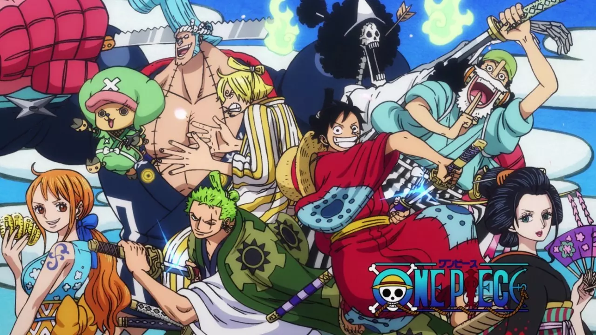

One Piece é uma obra prima que considero meu anime favorito! Produzido pelo grandessíssimo Oda!
A história se baseia ao redor de um jovem chamado Monkey D. Luffy, o famigerado "Chapéu de Palha" que sonha em ser o Rei dos Piratas, que no anime podemos dizer que é o título da pessoa mais íncrivel do mundo. Uma peculiaridade desse garoto seria que seu corpo é feito de borracha,
graças ao poder de uma fruta que ele comeu quando criança. A história é extremamente longa e divertida e o que mais me prende com certeza é
a interação entre os personagens, porque ao longo do seu caminho como Pirata, Luffy vai recrutando os membros para seu bando, enfrentando diversos
vilões antes de adquiri-los. As batalhas são intensas e longas, além da história de cada membro do bando ser muito bem feita! É uma caminhada bem extensa como eu disse, mas cada episódio vale a pena, quanto aos membros da tripulação, aqui estão seus nomes por ordem de entrada no bando: Monkey D. Luffy (Capitão),
Roronoa Zoro (Vice Capitão e Espadachim), Nami (Navegadora), Ussop (Atirador), Vinsmoke Sanji (Cozinheiro), Tony Tony Chopper (Médico),
Nico Robin (Arqueóloga), Franky (Carpinteiro/Construtor), Brook (Músico) e Jimbe (Timoneiro).
Detalhe: essa obra possui mais de 1000 episódios.

2° Haikyu! O anime de vôlei mais íncrivel que existe!
Esta é uma obra bem específica nesta lista, pois volêi é um dos meus esportes favoritos graças a esse anime! Esta obra conta da história de um pequeno garoto chamado
Hinata, um jovem que as pessoas não acreditavam que poderia jogar vôlei por ser muito baixo, mas graças a persistência e muito treinamento, ele consegue entrar para o time de
vôlei do colégio em que começou a estudar. É exatamente nesse time em que está a paixão pelo anime, pois os criadores da obra retratam muito bem as características e personalidade
de cada membro da equipe, fazendo a quem está assistindo realmente torcer para que eles vençam! Tanto que enquanto eu assistia, sempre que eles se davam mal, eu sentia como se fosse
um time do meu coração perdendo uma partida.
3° One punch man! O humano mais forte que existe!
Bom, já deu para perceber que gosto de animes que tenham "One" no nome, já que One punch Man não é diferente. Este anime nada mais se trata da história do homem mais
forte de todos os universos de anime e sim, ele é careca. Diferentemente de One Piece, One Punch Man é um anime extremamente curto, com menos de 30 episódios. Durante o anime
o "super careca" chamado Saitama, enfrenta diversos inimigos que para muitos são poderosos, mas que para ele são apenas entediantes, pois ele faz juz ao nome dessa obra, sempre
derrotando-os com um único soco! Isso pode fazer alguém pensar que seria um anime chato, já que não existiriam desafios para o personagem principal, mas é o extremo oposto, porque
o criador desse anime "Yusuke Murata" faz com que Saitama enfrente situações engraçadas e que entretem muito quem está assistindo!